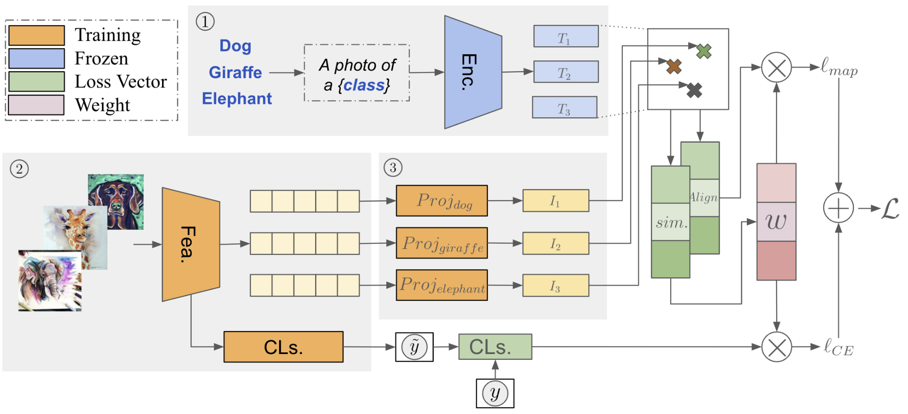

A3W: Language Anchor-Guided Domain Generalization
Robust Learning Under Domain Shift and Noisy Labels

We propose A3W, a language-anchor–guided method that tackles the combined challenges of domain shift and label noise, improving the reliability of real-world machine learning systems. A3W aligns visual features with NLP-derived semantic anchors and dynamically reweights each sample based on its similarity to these anchors, which suppresses spurious correlations and reduces the influence of noisy labels during training. Across five benchmark datasets with 10–25% synthetic noise, A3W achieves the highest accuracy and outperforms ERM, Mixup, IRM, GroupDRO, and VREx by margins of up to 6–13% depending on the dataset. These results show that semantic anchoring and adaptive weighting significantly enhance robustness to both noise and distribution shift while maintaining stable convergence. My contribution includes developing the anchor-guided weighting strategy, running the full experimental evaluation, and analyzing robustness and noise-sensitivity behavior across all benchmarks.